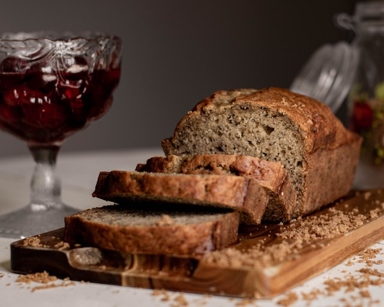

Banana Bread

Description
If you find yourself with some overripe bananas, this is the perfect recipe for you. This banana bread comes together with ingredients you likely already have in your pantry, and it's delicious to boot! A warmed banana loaf with a pad of butter is one of my favorite things to have for breakfast. It's best when it's homemade, in my humble opinion.
Ingredients
- 1 ½ cups all-purpose flour
- 1 teaspoon baking soda
- ½ teaspoon salt
- 1 cup white sugar
- 2 eggs, beaten
- ¼ cup butter, melted
- 3 bananas, mashed
Directions
- Preheat the oven to 350 degrees F (175 degrees C). Grease and flour two 7x3-inch loaf pans.
- In one bowl, whisk together flour, baking soda, salt, and sugar. Mix in slightly beaten eggs, melted butter, and mashed bananas. Stir in nuts if desired. Pour into the prepared pans.
- Bake in the preheated oven for 1 hour, or until a wooden toothpick inserted in the center comes out clean.